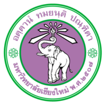

มหาวิทยาลัยเชียงใหม่
Chiang Mai University
คติพจน์ อตฺตานํ ทมยนฺติ ปณฺฑิตา
(บัณฑิตทั้งหลายย่อมฝึกตน)
มหาวิทยาลัยเชียงใหม่ เป็นมหาวิทยาลัยแห่งแรกที่ทางราชการจัดตั้งขึ้นในส่วนภูมิภาคของประเทศไทย ตามโครงการพัฒนาการศึกษาในส่วนภูมิภาค พ.ศ.2501 มหาวิทยาลัยเชียงใหม่ตั้งอยู่ ณ ดินแดนล้านนา อันเป็นแหล่งสะสมวัฒนธรรมอันล้ำค่ามานานกว่า 700 ปี มีสภาพภูมิประเทศงดงามท่ามกลางสภาพแวดล้อมอันเป็นธรรมชาติ บริเวณเชิงดอยสุเทพ ต.สุเทพ อ.เมือง จ.เชียงใหม่
นับตั้งแต่มีการเรียกร้องให้ขยายการศึกษาระดับอุดมศึกษาออกสู่ภูมิภาค โดยขอให้รัฐบาลจัดตั้งมหาวิทยาลัยขึ้นที่จังหวัดเชียงใหม่ตั้งแต่ปี พ.ศ.2493 ในที่สุดการเรียกร้องก็สัมฤทธิ์ผลก่อให้เกิดความภูมิใจและดีใจเป็นอย่างยิ่งแก่ชาวล้านนา วันที่
29 มีนาคม พ.ศ. 2503 คณะรัฐมนตรีมีมติอนุมัติให้จัดตั้งมหาวิทยาลัยเชียงใหม่ขึ้น โดยกำหนดให้เปิดสอนในปีการศึกษา 2507 และให้กระทรวงศึกษาธิการ โดยมี ม.ล.ปิ่น มาลากุล รัฐมนตรีว่าการกระทรวงศึกษาธิการ ดำเนินการเตรียมการจัดตั้ง
วันที่ 15 มกราคม พ.ศ. 2507 พระบาทสมเด็จพระเจ้าอยู่หัว ทรงพระกรุณาโปรดเกล้าฯ ให้ตราพระราชบัญญัติมหาวิทยาลัยเชียงใหม่ พ.ศ. 2507 ประกาศในราชกิจจานุเบกษา เล่มที่ 81 ตอนที่ 7 ลงวันที่ 21 มกราคม พ.ศ. 2507 ซึ่งมีผลใช้บังคับตั้งแต่วันถัดจากวันประกาศในราชกิจจานุเบกษาเป็นต้นไป
วันที่ 18 มิถุนายน พ.ศ. 2507 วันเปิดเรียนวันแรกของมหาวิทยาลัยเชียงใหม่
วันที่ 24 มกราคม พ.ศ. 2508 พระบาทสมเด็จพระเจ้าอยู่หัว และสมเด็จพระนางเจ้าพระบรมราชินีนาถ เสด็จพระราชดำเนินทรงเปิดมหาวิทยาลัยเชียงใหม่อย่างเป็นทางการ
วันที่ 7 มีนาคม พ.ศ. 2551 มหาวิทยาลัยเชียงใหม่ปรับเปลี่ยนสถานภาพเป็นมหาวิทยาลัยในกำกับของรัฐ
รูปช้างชูคบเพลิงมีสุภาษิตเป็นภาษาบาลีว่า อตฺตานํ ทมยนฺติ ปณฺฑิตา อยู่ในกรอบเส้นรอบวงด้านบนและคำว่า มหาวิทยาลัยเชียงใหม่ พ.ศ. 2507 อยู่ด้านล่างตรงกลาง ระหว่างข้อความทั้งสองนี้ มี ดอกสัก คั่นกลางปรากฏอยู่ ทั้งด้านซ้ายและด้านขวา ซึ่งมีความหมายดังนี้ ช้าง เป็นสัตว์ที่มีคุณค่าสูงมากในภาคเหนือ จึงถือเป็นสัญลักษณ์ของภาคเหนือ
การก้าวย่างของช้าง หมายถึง ความเจริญก้าวหน้า ไม่หยุดยั้ง คบเพลิง หมายถึง ความสว่างไสวแห่งปัญญาและวิชาการ รัศมี 8 แฉก หมายถึง คณะทั้ง 8 ที่มหาวิทยาลัยเชียงใหม่จะจัดตั้งขึ้นตามวัตถุประสงค์ในการจัดตั้งมหาวิทยาลัยเชียงใหม่
พุทธสุภาษิต อตฺตานํ ทมยนฺติ ปณฺฑิตา มีความหมายว่า บัณฑิตทั้งหลายย่อมฝึกตน ดอกสัก ปรากฏอยู่ทั้งด้านซ้ายและด้านขวา ซึ่งถือว่าเป็นต้นไม้ที่มีค่าและมีความอุดมสมบูรณ์ในภาคเหนือ ดอกสักเป็นดอกไม้ขนาดเล็กและอยู่ในพวงใหญ่ มีสีขาว เส้นผ่าศูนย์กลางประมาณ 1 เซนติเมตร มีกลีบดอก 6 กลีบ ความต่อเนื่องในการพัฒนา ต่อยอด สานต่อจนเป็นหนึ่งในสินค้าที่สร้างชื่อเสียงให้กับประเทศมาระยะหนึ่งแล้ว
มหาวิทยาลัยเชียงใหม่ ประกอบไปด้วย 20 คณะ 1 วิทยาลัย
| # |
Facuty Name |
Total Student |
| 1 |
มนุษยศาสตร์ |
2134 คน |
| 2 |
ศึกษาศาสตร์ |
1491 คน |
| 3 |
วิจิตรศิลป์ |
1199 คน |
| 4 |
สังคมศาสตร์ |
812 คน |
| 5 |
วิทยาศาสตร์ |
2260 คน |
| 6 |
วิศวกรรมศาสตร์ |
3258 คน |
| 7 |
แพทยศาสตร์ |
1496 คน |
| 8 |
เกษตรศาสตร์ |
1410 คน |
| 9 |
ทันตแพทยศาสตร์ |
609 คน |
| 10 |
เภสัชศาสตร์ |
870 คน |
| 11 |
เทคนิคการแพทย์ |
1194 คน |
| 12 |
พยาบาลศาสตร์ |
2505 คน |
| 13 |
อุตสาหกรรมเกษตร |
1292 คน |
| 14 |
สัตวแพทยศาสตร์ |
384 คน |
| 15 |
บริหารธุรกิจ |
1926 คย |
| 16 |
เศรษฐศาสตร์ |
1831 คน |
| 17 |
สถาปัตยกรรมศาสตร์ |
402 คน |
| 18 |
การสื่อสารมวลชน |
783 คน |
| 19 |
รัฐศาสตร์และรัฐประศาสนศาสตร์ |
1043 คน |
| 20 |
นิติศาสตร์ |
852 คน |
| 21 |
วิทยาลัยศิลปะ สื่อ และเทคโนโลยี |
1243 คน |